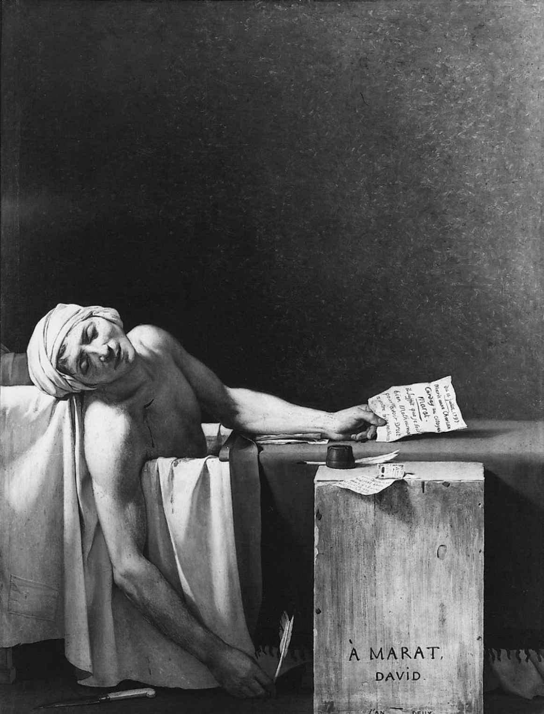
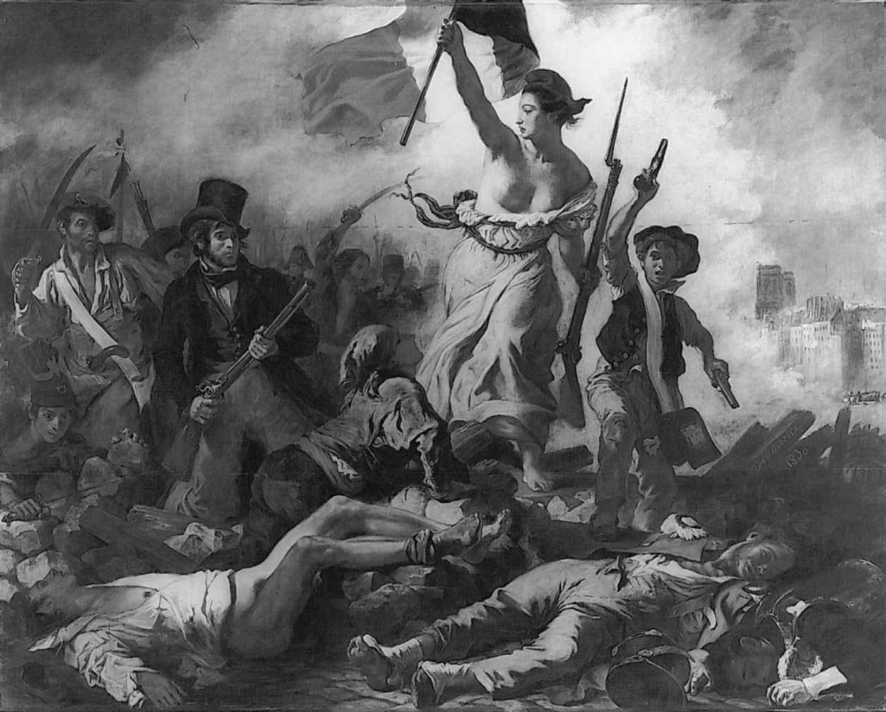

大革命以宣告民族主权为开端。民族（nation），而非国王、世袭的精英或者教会，才是人类事务中权威的最高源泉。正是基于这种信念，国民议会于1790年宣布，除非进行自卫，法国绝不进行战争；两年之后，当新生的共和国在德意志专制王侯的联合阵线的敌意攻击之后继续生存时，同样的信念又激励国民公会向所有试图恢复其自由的人民表达博爱并提供帮助。国民公会只用了几个月就意识到，这个毫无节制的誓言不可能照办；一代人之后，大革命释放的力量将被国王们的联盟击败，后者有毫不妥协的贵族和一心复仇的教士为支持，这些人鄙视任何以民族为主权者的思想。尽管如此，一种新的政治合法性原则已经无法回避地被提了出来；1815年，反动势力取得了表面的胜利，但此后的一百年间，民族主权已经在欧洲和美洲获得广泛认可。在20世纪，这个原则又将召唤人们将欧洲人从他们的全部海外殖民地驱逐出去。
何以构成一个民族，这仍然是个难题。西耶斯1789年为攻击贵族特权而提出的定义是，“一个生活在共同法律下并由同一立法机构代表的联合体”。这是个开端，但仅此而已——对那些认为语言、传统和土地至少同样重要的人们来说，这个定义太宽泛了。不过，在过去两个世纪中，一旦作了自我定义，各个民族就很少愿意由不是自己选定的权威来统治自己。1789年的革命者假定，各民族主权只能以代议制的方式行使，但十年之后，拿破仑就开始表明，民族主权可以用来为独裁乃至君主制提供合法性。1799—1804年间，他为使自己成为世袭皇帝而采取的每一步都得到全民表决的认证，但表决回答的是某个仔细设定的问题。表决结果从未受到质疑，而且几乎可以肯定的是，为了让结果显得更为有力，一切操控手段都采用过。1851—1852年期间，他的侄子拿破仑三世为了给自己的篡权行为披上国家合法性的外衣，也将使用同样的手段；最近的1958年，第五共和国就是以一次赋予戴高乐将军以广泛权力的公投为起点的。在法国以外的世界，全民表决民主或极权主义民主技术的广泛传播，大部分要等到20世纪；但是这些行为和当时宣布的更具自由色彩的理想一样都深深植根于1789年的那个伟大的合法性原则。
自由主义这个术语，到拿破仑的权威已经衰落时才被发明出来。它第一次被使用，是为了描述加的斯议会在后拿破仑时代，即1810—1813年的西班牙建立代议制政府的理想。不过，西班牙自由派所梦想的，乃是基于制宪议会率先在法国确立的政治楷模：以成文宪法为基础的代议制政府，宪法将保障一系列基本的人权。在整个19世纪，直到1917年最后一个绝对君主制在俄国被推翻为止，上述诉求将构成政治改革派的最低要求。自由主义信念的基本要旨，可以在《人权和公民权利宣言》中找到，即选举自由，思想、信仰和言论自由；免于被专断课税或监禁的自由。自由主义者坚信宣言中的平等原则，即法律面前的平等、权利平等、机会平等。不过，他们并不推崇财产平等，而且他们始终强调的法治有一个主要的功能，这便是保障财产所有者的绝对权利。
除此之外，便是存在广泛分歧的领域。直到20世纪，仍然只有很少一部分人认为，妇女应该像男子一样拥有同样的自由和平等；大革命期间，极少数大胆的男女人士曾为妇女的自由权益鼓与呼，但他们受到嘲笑，陷于沉寂。法国妇女直到1944年才最终获得政治权利。何以等待这么长的时间？其中一个原因是，第三共和国的政客们害怕女选民会受其教士的左右：1793年以来，妇女成为天主教抵制革命的世俗主义的中流砥柱。种族平等也让自由主义者深感矛盾。在法国，最初的反奴隶制的情绪，与大革命的第一波冲击刚好巧合，但是奴隶是财产，他们的劳动是一个庞大的财富和商业网络的支柱。1791年圣多明各大规模的奴隶起义，似乎生动地证明了放松对奴隶的控制带来的危险。为了再次控制圣多明各，国民公会的代表宣布废除奴隶制；1794年2月，巴黎认可了他们的举动。议员们欢呼自己成为最早废除奴隶制的统治者——他们的确是，不过仅仅是认可了既成事实而已。但不到十年之后，拿破仑就试图在仍由法国控制的各岛屿恢复奴隶制，而各个表面上比拿破仑更具自由色彩的政权也一直维持着奴隶制，直到1848年：那时的革命者将废除奴隶制作为他们向1794年遗产致敬的首要事务之一。
采取这一步骤的新制宪议会，是由男子普选产生的——这又是一个迟来的致敬：1792年国民公会的选举曾绝无仅有地采用此原则。不过即使是这一次的选举，也排除了仆役和无职业者。1789年的革命者做出的限制更加严格。他们认为，只有有产者才享有政治代表权：即使所有人现在都是公民了，也只有那些拥有最低限度财产的人，才可以成为积极公民。这种区分反映了对民众参与公共生活的不信任，这种不信任像历史本身一样古老，大革命的重大事件丝毫没有驱散它。大革命从1789年危机中的骚乱、威胁和流血中诞生，革命头几年中始终贯穿着群众暴力和暴力威胁，可怕的血腥场景终于在1792年的“九月大屠杀”中凸显出来。所有人都意识到，无套裤汉的报复欲对一年后恐怖的加速到来起了多么大的作用；因此，恐怖结束后，国民公会在制定1795年宪法时，深思熟虑地将比1791年更多的人排除出公共生活。于是，延续半个世纪的模式确定了下来，在这种模式下，代议制政府仅仅代表非常富有，即有物可失的人；不过，即使是非代议制政府，如拿破仑的体制，也会考虑人民的利益，并试图通过与人民的合作来实现统治。
一个令人困扰的悖论是，倡导自由主义原则的大革命，如果没有人民的支持便不能进行。1789年7月14日，巴黎人民拯救了国民议会，10月可能再次挽救了它。曾经的“暴民”——只有反革命者仍然敢于如此称呼——如今已是觉醒的、行动起来的人民，他们的极端行为总能找到辩解声。狂暴的马拉正是以他的报纸《人民之友》、通过这种辩解而崭露头角的，1793年被刺杀后，他被尊奉为人民事业的殉道者（并在达维德最难忘的绘画作品中被铭记）。到1792年，民众活跃分子以自己是“无套裤汉”而自豪；在君主制被推翻后，民众风格和话语笼罩着公共生活，为时大约有三年，高雅的装束和言辞都被抛弃，政治权利被平等化（至少在男人中间）。一部平等主义的宪法被宣布、至少被许诺了，它承诺免费教育，承诺对贫病及无劳动能力者提供“社会保障”形式的福利支持。与此同时，富人因为强制借款而受到剥夺，人们还考虑将流亡者和叛国者的财产分给贫苦爱国者，基本消费品的价格也通过最高限价令而被抑制在低水平上。所有这些政策在罗伯斯庇尔倒台后都被抛弃了；但它们立刻被很多人视为对真正的社会平等的食言。巴贝夫及其1796年的合谋者打算以从未实施过的1793年宪法为基础夺取权力。后来，社会主义者回望革命历上的共和二年，以寻找其理想的最早的“先行者”，那时，人民第一次为追求自己的利益而不是充当更为强大的操控者的工具而进入政治生活。

图9 马拉之死：雅克——路易·达维德的革命圣殇像
但即使在这个问题上，也存在让人为难的悖论。共和二年也是恐怖时期，至少它最后的阶段很像是付诸实施中的社会报复。民众权力和恐怖不可分离吗？罗伯斯庇尔和圣鞠斯特等大革命时期的演说家初步的理论阐述，后来被社会主义和共产主义革命者引用，这些后来者也不怯于接受一种无情的见解：要打败人民的敌人，只有彻底消灭他们。没有恐怖就没有真正的革命。19世纪的人们一回想起革命法庭及其进行的公开审判就会战栗，20世纪的人们则看到，很多从革命中寻求合法性的政权都在复制这一切。很多同情大革命的宏大抱负的后来人，都合情合理地不太愿意相信，社会唯有通过流血才会变得更平等。他们认为恐怖最多是一种残酷的必要性，导致其出现于第一共和国的，乃是“局势”的力量，而非不可避免的逻辑力量；持同样看法的还有一些自由派，他们为在共和二年听到的对财产权的威胁以及对生命的威胁感到不安。被迫仓促做出的宗教抉择和路易十六夫妇的莽撞行为分裂了国家，战争的前景逼迫人们为国家防御而采取极端措施，于是反对派和叛国者之间的区分变得模糊了。不过，法国大革命更像是对可能发生的事情的警示，而不是对必然到来的事情的处方。
所有这类感知，都植根于这样一个信念：不管它具有多么复杂的特征，大革命中的善远多于恶。这是左派的观点，左派本身也是起源于大革命的一种政治描述方式，在那时的历次议会中，主张进一步变革的议员坐在主席的左侧，而保守派议员聚集在主席的右侧。右派实际上是现代的政治保守主义，它像自己反对的所有事物一样，也是法国大革命创造的。旧制度那种本能的惰性一去不复返了：谁要试图让政府、权力结构和社会制度免受新意义上的革命的侵害，就必须提出全新的原理和策略。
旧秩序的崩溃，以及随之而来的迅猛变革，让每个人都目瞪口呆。在随后五年的困惑中，毁灭、暴行、屠杀等更可怕的消息接踵而至，惊愕不已的旁观者们在寻求解释这一漫无边际的大骚乱。心怀敌意的评论者认为，这只能是一场阴谋。作为政治网络的俱乐部，雅各宾俱乐部充当了革命激进主义的载体；人们怀疑这些俱乐部就是神秘的共济会，后者在整个18世纪大量出现。共济会会员信奉自然神论，但主张宗教宽容（因此受到天主教会的双重谴责），并以其秘密性而自豪；他们宣扬自由、平等和慈善等价值观，因此回想起来，他们的目标和理念侵蚀了一切既定的价值观——尽管过去的精英阶层曾成群结队地加入共济会。迄今为止，共济会和法国大革命之间并未建立起可靠的因果关联，实际上与雅各宾俱乐部之间也没有可信的关联；但是，1797年，一部旨在证明二者在阴谋颠覆宗教、君主制和社会等级制方面存在联系的著作，成为全欧洲的畅销书。这就是巴吕埃尔的《关于雅各宾主义历史的报告》，该书不断重印，直到20世纪；这反映了公众对一场隐秘运动经久不息的猜疑心理，而在1789年之前，除了少数偏执的妄想狂教士，没有人对这场运动有所警觉。但这一论点长久不衰，以致共济会现在被认为与一些大陆国家的共和主义和反教权主义有关，而加入共济会则成为表达政治激进主义信念的姿态——在大革命之前，情况绝非如此。保守主义政权——直到纳粹及其维希傀儡政权——也将一直带着最深刻的猜疑眼光去看待共济会，而且将定期封闭其网络。
这样的猜疑并非毫无依据，因为在整个19世纪，很多政治激进派开始相信，发动革命确实要通过密谋活动。1789年之前没有这类革命性的密谋。没有人相信，一个既定制度会被这样彻底推翻。但是，一旦1790年代的法国史证明这是可能的，这段历史也就成为现代史上的经典时段，无论是启迪还是警示，它都是各派希望效仿或避免的先例。不过，即使是革命的同情者，也很难接受这样的看法，即密谋不是成就革命的道路，否则革命就是盲目的命运的作用，而非人的有意识的介入造成的影响。因此，就在1790年代，一些秘密群体在欧洲很多国家策划革命。在波兰和爱尔兰，它们对大规模的血腥起义的爆发起了重要作用。它们的领导者失败之后向法国寻求帮助，塔德乌什·柯斯丘什科、沃尔夫·托恩等人，从此被尊为民族独立的先知和殉道者。当大革命在法国也开始让其支持者失望时，一场真正的雅各宾密谋酝酿了出来——但它反对的是新制度而非旧制度。这就是1796年巴贝夫的“平等派密谋”，历史上首次共产主义革命的尝试，它遭遇了悲惨的失败。但巴贝夫的同谋者邦纳罗蒂为建立密谋革命网络而耗尽余生；1828年，他在《为平等而密谋》一书中留下了对巴贝夫的永久记忆，该书曾激励三代颠覆者，1917年俄国革命胜利后，它成为取得成功的共产主义的圣典。实际上，在20世纪的头25年，在俄国经历两场革命的时候，法国的先例一直困扰着俄国知识分子；1917年革命的主要领导人甚至一直在思考谁是雅各宾派、谁是吉伦特派，他们中间是否还潜伏着一个拿破仑。

图10 不朽的传奇：欧仁·德拉克鲁瓦的《自由引导人民》（1830年）
与此同时，在法国，诉诸下一次革命成了一面旗帜；在19世纪的大部分时间里，对很多声誉卓著的人物来说，这也是一种政治选择。1830年，当查理十世看来连革命遗产中最薄弱的要素也要抛弃时——当初他哥哥路易十八曾接受这些遗产，作为继承拿破仑的代价——他被巴黎街头持续三天的起义推翻了。他的堂兄弟和继承人路易——菲利普也装模作样地挥舞着三色旗，试图调停源自1789年的各种严重分裂的传统。但路易——菲利普失败了，他在1848年的革命中被赶下了台，那时的反抗更具民众色彩。另一个波拿巴终结了这次革命，但他在普法战争中的失败引发了革命恐怖以来最血腥的一幕：这就是1871年的巴黎公社，约有25 000人丧生其中。公社这一名称本身就让人想起1792年，而且很多公社社员认为自己是无套裤汉的化身，与第一共和国面临着同样的敌人，包括王党分子、天主教派、两面三刀的将军们以及贪婪的富人。然而，只有最后一类人从他们的失败中获益，从1870年代初的创伤中诞生的第三共和国将在大革命的意象中自豪并谨慎地追求早在1790年代就已表达出的民主和反教权主义的理想。1917年之后的半个世纪里，很多法国知识分子认为，俄国革命是他们的革命期许的迟到的兑现，有关这革命的十年的史学研究也被法国共产党的成员或同情者所主导。但是，他们对大革命的控制，从1950年代中期起开始受到挑战；随着1989年苏维埃帝国的崩溃，大革命两百周年之际占支配地位的解释是来自新保守派、前共产党人弗朗索瓦·孚雷的。
孚雷认为，恐怖从大革命一开始就已注定，不过在他看来，大革命的经历就是为现代政治文化奠基的历程。美国人最有理由质疑此说，因为他们的那场建国革命比法国人的革命早了十余年。在帮助美国人争取独立后，很多法国人当然觉得大西洋对岸的例子鼓舞人心，但没人认为美国人的做法能够移植到欧洲。当18世纪政治创造中最持久的丰碑——美国宪法的制定完成之时，法国人正忙于提出制宪诉求；他们不无道理地声称自己的革命与历史上的任何其他革命都不相似，而且与此前别的地方的动荡关系甚少，除了友好的博爱之情。连美国人很快也陷入了严重的分裂中：他们不知道新法国究竟在何种意义上还是那个曾帮助他们赢得独立的国家，也不清楚应在多大程度上赞赏法国的新制度。美国远离旧大陆，对与旧大陆接触心存犹疑，而且还讲着一种当时仍处次要地位的语言，所以在20世纪之前它被法国大革命边缘化了——即便美国的向西扩张得益于1803年拿破仑出售路易斯安那。
与此同时，欧洲的保守主义深信，旧制度的稳定、威严和秩序之所以被瓦解，是因为丧失了警惕性，于是保守主义对颠覆力量的源头展开了打击。在时间跨入19世纪之前，各国政府都加紧扩张镇压手段，间谍和告密者激增，常规的公共警察力量也开始建立。嫌疑者的名单将经常性地保留，他们的行动被跟踪。各种形式的出版物将面临严厉的审查，媒体被迫接受最严格的监控，因为它们被指责在大革命前和革命期间传播不服从精神和自由思想。所有镇压体制中，最有效的便是拿破仑的体制；他虽是大革命的产物，但努力将其诉求奠基于让有产者确信：雅各宾主义的社会威胁已经被抑制。拿破仑还认识到，大革命给法国造成的最初的也是最深刻的创伤是与罗马天主教会的纷争；没有什么比他与庇护七世的教务专约更有利于终结大革命的了。与他身后整个19世纪的所有保守政权一样，拿破仑深信，有组织的宗教所扮演的稳固且公认的角色，是秩序和权威最坚固的支柱：他在这样的宗教中看到的纯粹是“社会秩序的秘密”。
对教会来说，1790年代的经历是悲怆的，这段经历中包括1793年彻底扑灭宗教信仰活动的企图——这可是历史上前所未有的——以及次年国民公会宣布放弃任何宗教信仰（这是欧洲历史上建立世俗国家的首次公开尝试）；有此经历，教会便迫不及待地想要重建与世俗权威的古老联盟。结果看来并不令人满意。缔结教务专约八年之后，就像其前任——一名法国人的囚徒——一样，庇护七世发现自己丧失了在意大利中部的领地，而且就要面临拿破仑长达四年的无情凌辱。被囚禁在圣赫勒拿岛时，这位原来的皇帝声称，他曾计划彻底废除教宗制度。他的继承者——波旁的君主们对教会友好得多，但是他们早已放弃了恢复教会在1789年之前的地位的想法。重新谈判教务专约的尝试搁浅了，新政权确认了教会的土地损失，第一次谈判时，拿破仑坚持要教宗接受这一前提条件。从这个时候起，在这个即将到来的动荡不已的世纪中，教会的命运将与法兰西国家的每次变迁息息相关；当这个国家终于实现共和制，并鼓吹它源自1794年那个曾割断与教会的一切联系的国家时，政教分离的道路实际上已经铺好，并最终于1905年实现。与此同时，在法国以外的地方，教宗于1814年收回了他在意大利的领地，但欧洲其他地方的教会统治都没有恢复，而且意大利的民族主义者越来越把教宗国家视为亚平宁半岛统一的主要障碍。在1870年拿破仑三世垮台之前，君主制法国是教宗制度的主要支柱；不过，庇护九世眼见日益受人攻击，只能求助于彼岸的力量。法国支持的终结以及随之发生的前教宗领地并入新的意大利王国，与梵蒂冈大公会议发布教宗无谬误一说恰好同时发生——此前这种无谬说从未明确表达过，因为担心世俗统治者的反应。1790年以来教会与国家的关系的历程表明，信仰在没有国家支持的情况下有可能发展下去，其势头至少和在有国家支持的情况下一样。新兴的德意志帝国于1870年代发起的反天主教会的文化斗争（Kulturkampf）进一步强化了这一教训。罗马将继续谴责法国大革命，说它是现代渎神论和反教权主义的源头，是一场所有以这类立场而自豪之人乐于接受的变革。但是，1790年代的创痛，也在教会内部开启了一个缓慢的进程：它开始逐渐承认，独立于世俗权威、自由地决定自己的事务、仅要求容忍宗教活动和宗教行为，或许是件好事。不过，当教会被授予权力时，如在20世纪中叶的西班牙和爱尔兰，教会还是难以抗拒；但在一个定期的政治变革成为常规并为人期待的世界中（这一点仍然可以追溯到法国大革命），过分紧密地认同某个政权——不论多么同情后者——是不明智的，很多有头脑的教会人士已经日益清晰地认识到了这一点。
然而，在整个19世纪，教会仍然因为过分紧密地依附于反动、压迫性的政权而付出代价。直到1920年代，墨西哥革命的最后阶段还有意识地仿效1793年的去基督教化，而信仰基督的印第安人为支持受攻击的教会而发起的基督教抗争，又让人想起那一年旺代的叛乱。不过，极端的反教权主义最后取得的重大胜利，打击最甚的不是天主教会（至少在1945年后波兰、捷克斯洛伐克和匈牙利天主教会受到打击之前），而是俄罗斯的东正教会。1922年，列宁已经“得出坚定的结论：我们现在必须对教士挑起一场无情的、决定性的斗争；为了镇压他们的反抗，我们必须残酷到让他们数十年也不敢忘记。我们为此开枪……越多，就会越好”。像1793年几个更为狂热的反基督教分子一样，斯大林在革命前也是为担任教士而接受教育的，但在他统治下的苏联，官方信奉的是无神论，并致力于根除“迷信”。大部分教堂被关闭，很多被摧毁，还保持着信仰虔诚的主要是农村妇女，就像1790年代的法国。斯大林死后，这些政策依然维持着，不过没那么残酷了；苏联崩溃之后，教会再次复活了。与此同时，苏联在东欧的各卫星国，更为清楚地了解过分激烈地与教会对抗的后果。1978年，波兰出了一位教宗，现在回过头去看，这可以说是一个征象：近两个世纪前首次出现的极端世俗主义的意识形态，现在已开始坍塌，教会正在恢复信任。
革命者对宗教的批判，甚至在变成一场倾尽全力的攻击之前，就已成为1789年的革命者们更为广泛的信念的一部分，这信念就是推进人类事务的理性化。他们认为，旧制度的崩溃为他们提供了一个很好的机会，让他们可以控制环境、按有意识的计划或一系列原则去重塑人类事务。以前的人们从未有过这样非凡的机会。当他们的军队和拿破仑的军队先后推翻其他的旧制度时，他们赋予（毋宁说是强加给）自己的臣民同样的机会。所有新安排和新出现的制度，其要旨现在看来都是理性化和一致化。行政地图和疆界被重绘，区划大致平等，各种不规则的现象都被根除。法国当时划分的省（departments）一直保留到20世纪且未经改动。交换和流通手段也实现了统一化，包括通货、度量衡、语言；其基础是由中央细心制定的教育体制，以及单一明晰的法典。在1790年代，上述事务有些仅仅是个草案，或刚刚开始；但是，由于拿破仑的推动和其目标之坚定，大部分事务被牢固确立下来，并成为随后历届政府追求的目标。这涉及的是现代国家如何自我组织的问题。的确，在国际竞争的无情压力之下，很多国家早在1789年之前就已经在这个方向上采取了一些步骤：不过遭遇很大的争议，而且人们还在讨论，导致法国旧制度垮台的是否就是这些步骤。大革命将抵制性的制度和力量扫到一边，无论是在法国，还是在法国的势力曾到达的其他地方。大革命在这样做的同时，为所有政权提供了一个具体的教训：一旦下定决心，现代化会变得多么容易。
或者说，看起来是这样。实际上，法国大革命的胜利远非那么容易。它们是通过在国内狂热而野蛮的措施、在国外无情的军事手段才达到的。根据官方的数字，恐怖期间的罹难者为16 000人，但可能还要加上在1793—1794年的战斗和报复中死去的15万人。实际上，最近的一些历史学家甚至认为，旺代遭受的毁灭性打击可以看成现代史上的第一次种族灭绝企图。1792—1815年反对欧洲旧制度的战争夺去了500多万人的生命（其中140万是法国人），这场屠杀的规模堪比1914—1918年的世界大战，只是持续的时间更长。后来，一些深受革命者的抱负和成就感染的评论家们，往往忽视或淡化这一沉重代价。因此一个必然的推论是，当这样的狂热者得胜时，如在20世纪的俄国，大屠杀的惨剧便再度上演。以这种代价取得的胜利，无法持久存在下去。
我们在这一章看到，法国大革命留给19世纪的遗产是巨大的，但这笔遗产总是有偏颇的，经常还充满矛盾。在欧洲，20世纪建立起的那些革命的共产主义体制并不比这笔遗产更为持久，而仍然存在着的体制，其自身已经发生了转变，转变的方式也许会让其奠基者感到愤怒。从长期来看，挫败革命冲动的是文化多元性的持久存在。1789年以来，由国家权力强加的理性主义的意识形态，以及信奉这一意识形态的知识分子和执政者，从来没有成功消除那些较少理性色彩的认同资源的作用，这类资源如习俗、传统、宗教信仰、地区和地方忠诚，还有不同的语言。大革命的所有理性化步骤中，最雄心勃勃的大概是重新确定时间原点的努力，即以1792年9月共和国建立为时间的起点。月份被调整，并重新命名，七天一周被十天一“旬”取代。但这种革命历法从未流传开来，于共和十四年（1806年）末被拿破仑正式废弃。这是一个预兆：面对人的抵制或冷漠，很多其他的理性化计划也将失败。1980年代中期以来，世界上大部分信仰普世共产主义的政权纷纷解体，上述力量也随之恢复元气并重新出现。即使在20世纪共产主义从未取得胜利的国家，包括法国在内，去中央集权化和权力下放、承认语言多样性、放弃国家过于积极地承担或获取的义务，已经成为20世纪最后20年的鲜明特征。随着1989年二百周年纪念日的逐渐远去，最初意在对大革命提出的持久价值观进行的颂扬，如今更像是一场葬礼。